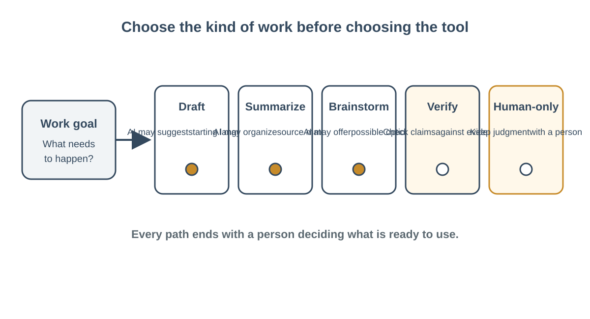

← Week 1: AI at Work—Useful, Imperfect, Optional
Generative AI as a Workplace Tool
Learning objectives: Describe in plain language how generative AI produces outputs, distinguish generated responses from verified facts, and identify when information may be incomplete or stale.; Explain a practical, plain-language model of how generative AI produces content from instructions and context.; Identify strengths, limits, uncertainty, and the need to verify generated material.
Content
Generative AI as a workplace tool: useful drafts, unverified claims
Objectives: explain-generative-ai, identify-ai-limits Estimated reading time: 7 minutes

Figure: AI is one possible aid among several task paths; human review remains part of the work.
Start with a mental model
Generative artificial intelligence (AI) is software that produces new material in response to instructions and context. It may produce text, pictures, audio, or other content. A conversational text model generates a sequence of words based on patterns it learned from examples and on the conversation in front of it. It can produce a response that fits the request remarkably well. That response is still generated material, not automatically a verified fact.
This distinction matters at work because writing quality and truth are separate qualities. A response may be grammatically smooth and logically organized while containing a wrong date, a missing condition, or a made-up source. The National Institute of Standards and Technology (NIST) calls confident presentation of false or erroneous generative-AI content “confabulation.” Its Generative AI Profile explains that a model's pattern-based generation can produce accurate content as well as inaccurate or inconsistent content. For a learner, the practical point is simple: fluency is not evidence.
A helpful analogy is a flexible continuation tool. It can draft likely language based on a prompt, much as an advanced form of autocomplete can continue or reorganize text. The analogy does not mean the system merely repeats the prompt; it can combine patterns in new ways. Nor does it mean the system has human experience or understands workplace consequences as a person does. Treat the analogy as a reminder that a response is generated from patterns and context, not as a promise of judgment.
What the tool can contribute
A generative system can be a useful first-pass assistant when a task is well bounded. It may suggest different ways to phrase a public announcement, sort fictional examples into categories, or transform a short text into a checklist. These uses work best when a person knows what good output looks like and can review the result before anyone relies on it.
Picture a fictional community center preparing an open-house notice. The center's made-up facts are: the event is free, it starts at 6 p.m. Thursday, and the west entrance is open. A worker asks for a brief, welcoming draft for first-time visitors. The tool's contribution is possible wording. It does not decide whether the event details are correct, whether the door is accessible, or whether the notice meets center policy. The worker checks each detail against the approved event plan, edits the language, and makes the decision to publish.
The same approach can help when exploring ideas. A worker might ask for five possible headings for a fictional training handout. The response gives options, not a command. The worker can choose, combine, rewrite, or discard them. If the options are generic, the worker may conclude that a quick human brainstorm is better.
Limits that change how you work
A model may add a plausible detail that was never supplied. It may omit a required detail, misread ambiguous instructions, or produce outdated information. The source of an answer may matter: a generative response is not an official policy document. A model may also reproduce unfair patterns from its training examples. If asked to judge people, rank applicants, or infer traits, an output can affect people in ways that are difficult to see or correct.
Watch for three common traps:
- The confident tone trap. Strong wording and a polished explanation do not show that the answer was checked. Ask what evidence supports the claim.
- The completeness trap. A response that looks finished may still leave out a condition or stakeholder. Compare it with the original task and any required checklist.
- The authority trap. A model's answer does not become an approved policy, legal interpretation, or professional decision because it is formatted as a report. Consult the appropriate trusted source or qualified person.
When facts are important, check those facts against a suitable source. If the model transforms supplied text, compare the transformation with the source. If the task calls for a judgment that affects a person's rights, opportunities, safety, money, or well-being, use established procedures and appropriate human expertise. Some tasks are not appropriate for a general AI service at all.
A small decision before use
Before using a generative tool, state the goal in plain language. Then ask: Is the task mostly language or pattern work? Can I provide safe information? Can I check the response? Can I undo or correct the result before it affects someone? Who will make the final decision?
A “yes” to all of these does not guarantee a good result; it suggests that a small, reviewed trial may be reasonable. If a “no” points to sensitive input, high consequences, lack of evidence, or an irreversible action, redesign the task or use another method. You may decide not to use AI. For example, drafting a public headline may be a reasonable optional experiment, while deciding which employee to discipline is a consequential human process that should not be delegated to a chatbot.
Start small. Ask for one draft or a few options rather than handing over a complete process. Keep the source facts visible. Set a review criterion such as “the time, date, and location must match the approved event plan.” If the response fails, correct it or discard it. If reviewing the response takes longer than doing the task directly, that is evidence the tool may not be useful here.
Keep the person accountable
The phrase Know the input, own the output summarizes the habit. Know what information you are sharing and whether it is appropriate. Own what you send, publish, decide, or hand to another person. The system can offer a draft, but you are responsible for the final work you choose to use.
This does not require distrust of every generated sentence. It requires matching trust to evidence and consequence. For a low-stakes headline brainstorm, a quick review may be enough. For a factual claim, use a relevant source. For a high-impact decision, follow policy and involve qualified people. The check changes with the job.
When someone asks whether AI should be used, a thoughtful answer names the task, input, expected benefit, review method, and human decision. “It is faster” is not enough if it adds correction work or increases risk. “It is AI” is not enough reason to reject a helpful, safe first draft. Consider the actual task and people affected.
Text equivalent of the model
A plain-text diagram of the work pattern is: Person defines a task and safe input → generative tool proposes an output → person checks it against evidence and constraints → person accepts, revises, verifies further, or rejects it. The arrow never skips the human decision when the output will be used at work.
Source
Autio, C., et al. (2024). Artificial Intelligence Risk Management Framework: Generative Artificial Intelligence Profile (NIST AI 600-1), especially section 2.2, “Confabulation.” National Institute of Standards and Technology. https://doi.org/10.6028/NIST.AI.600-1. Accessed 11 October 2026.